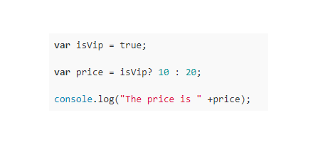
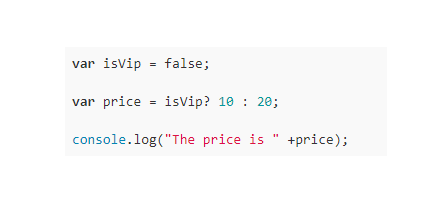

شرط if و else
في الدروس السابقة تكلمنا عن المتغيرات وانواع البيانات وذكرنا منها القيم المنطقية (boolean) وكيف انها ترجع لنا قيمتين عند عمل المقارنات الاولة true والثانية false, في درس اليوم سنتعرف كيف تقوم لغات البرمجة بإتخاذ القرارات المناسبة بناء على هذه القيم المنطقية.
سبق وقلنا أن الجافاسكربت تعمل كما تعمل عقولنا ففي حياتنا اليومية نواجة العديد من المعطيات التي على أساسها نقوم بإتخاذ القرارات المناسبة فدائماً قبل إتخاذك لقرار ما تقوم بوضع عدد من الشروط كالتالي:
اذا كان كذا فسأقوم بكذا والإ سأقوم بكذا
نفس الفكرة تحصل في اللغات البرمجية فهل فكرت يوماً ما لماذا لا يمكنك خداع الصراف الألي (ATM) وسحب كما تريد من المال؟
ذلك غير ممكن لان الصراف الألي يقوم بإتخاذ قرار اعطائك مبلغ من المال بعد التأكد من شروط عديدة سنأخذ منها أحد الشروط والتي هي التأكد من أن رصيدك يحتوي على مبلغ مالي أكبر أو يساوي المبلغ الذي تريد سحبة فاذا لم يكن لديك الرصيد الكافي سيقوم برفض إكمال العملية. لنكتب الكود الذي سيقوم بذلك:
var accountBalance = 100; var moneyRequest = 99;
قمت بتعريف متغيرين:
الأول accountBalance يحتوي الرصيد الحالي في الحساب
الثاني moneyRequest يحتوي المبلغ الذي سيتم طلب سحبة من الصراف الألي
سيقوم الصراف الألي بالتالي بعد حصولة على هذه المعطيات:
if ( accountBalance >= moneyRequest ){ //يتم تنفيذ الاكواد التي هنا في حال كان الشرط متحقق } else{ //يتم تنفيذ الاكواد التي هنا في حال كان الشرط غير متحقق }
لاحظوا وضع الشرط بين قوسين بعد كلمة if والتي تعني اذا كالتالي:
accountBalance >= moneyRequest
من الدرس الخاص بالمقارنات نعرف بأن هذه العملية سترجع لنا قيمة منطقية true وذلك لان رصيدي يحتوي على مبلغ 100 اكبر او يساوي المبلغ الذي طلبت سحبة 99 لهذا سيتم التعويض عن العملية اعلاة كالتالي:
if (true){ //يتم تنفيذ الاكواد التي هنا في حال كان الشرط متحقق } else{ //يتم تنفيذ الاكواد التي هنا في حال كان الشرط غير متحقق }
طالما وقد تم التعويض عنها بـ true فذلك يعني أن الشرط متحقق وسيتم الدخول لتنفيذ الأوامر في تلك المنطقة, لهذا سيقوم الصراف الألي بالموفقة على العملية وسيقوم بخصم المبلغ الذي طلبته من رصيدك الحالي كالتالي:
if (true){ accountBalance = accountBalance - moneyRequest; // خصم المبلغ من رصيدك وتخزين المبلغ الحالي في متغير الرصيد console.log("تمت العملية بنجاح الرجاء أخذ المال"); } else{ //يتم تنفيذ الاكواد التي هنا في حال كان الشرط غير متحقق }
الأن لنفترض بأنك تريد سحب مبلغ 50 من رصيدك الذي تبقى فيه 1 من اخر عملية سحب قمت بها فسيتم التأكد من الشرط التالي:
accountBalance >= moneyRequest
نعرف ايضاً من الدرس السابق ان هذه العملية سترجع لنا قيمة false وذلك لان المبلغ الذي طلبت سحبة هو 50 بينما رصيدي يحتوي على 1 فقط لهذا فالرصيد الحالي ليس أكبر او يساوي المبلغ المطلوب فسيتم التعويض عن هذه العملية بالقيمة المنطقية flase كالتالي:
if (false){ accountBalance = accountBalance - moneyRequest; // خصم المبلغ من رصيدك وتخزين المبلغ الحالي في متغير الرصيد console.log("تمت العملية بنجاح الرجاء أخذ المال"); } else{ //يتم تنفيذ الاكواد التي هنا في حال كان الشرط غير متحقق }
طالما والشرط غير متحقق فلن يقوم الصراف الألي بتنفيذ الأوامر التي بدأخل الشرط if ولكن سيقوم بتنفيذ الأوامر التي بدأخل الشرط else لهذا لنقوم بإخبار العميل بأن رصيدة غير كافي كالتالي:
if (false){ accountBalance = accountBalance - moneyRequest; // خصم المبلغ من رصيدك وتخزين المبلغ الحالي في متغير الرصيد console.log("تمت العملية بنجاح الرجاء أخذ المال"); } else{ console.log("نعتذر لعدم إكمال العملية. رصيدك غير كافي"); }
اذا لنلخص ما قام به الصراف الألي:
- اذا (if) كان الرصيد الحالي اكبر او يساوي المبلغ المطلوب قم بالموافقة على العملية وقم بخصم المبلغ الذي قام بسحبة من حسابة.
- والا (else) إعتذر له وقول له ان رصيدك غير كافي لاكمال العملية
الشرط if و else if و else
الأن لنفترض أني طلبت منك عمل برمجية تقوم بتحديد تقدير الطلاب وقلت لك قم بعمل التالي:
- اذا درجة الطالب من 90 الى 100 إطبع ممتاز
- اذا درجة الطالب من 80 الى 89 إطبع جيد جداً
- اذا درجة الطالب من 70 الى 79 إطبع جيد
- اذا درجة الطالب من 70 الى 69 إطبع مقبول
- اذا درجة الطالب من 60 الى 69 إطبع مقبول
- ما سوى ذلك إطبع راسب
نلاحظ انه لدينا 6 شروط يجب التأكد منها ما يعني أننا سنحتاج الى امر إضافي للتحقق من الشروط الاخرى, في هذه الحالة سنستخدم الحالة else if سنقوم بعمل التالي:
سنقوم بعمل المتغير التالي grade لتخزين درجة الطالب
var grade= 68;
الان سنقوم بمقارنة الدرجة بالشروط التي قمنا بتحديدها اعلاة كالتالي:
if ( grade >= 90 ){ console.log("ممتاز"); } else if ( grade >= 80 ){ console.log("جيد جداً"); } else if ( grade >= 70 ){ console.log("جيد"); } else if ( grade >= 60 ){ console.log("مقبول"); } else{ console.log("راسب"); }
سيتم طباعة مقبول كتقدير للطالب الذي قمنا بوضع درجته في المتغير grade, شاهد الصورة التالية لتعرف كيف تم المرور على الشروط حتى تم إجاد الشرط المتحقق فتم الدخول لتنفيذ الأوامر بداخلة

ـ Logical AND
احياناً نريد التحقق من شرطين فإذا تحققا مع بعض نقوم بأمر ما واذا لم يتحققا مع بعضهما البعض نقوم بشي أخر فعلى سبيل المثال عند محاولتك تسجيل الدخول على المنتدى ماذا يطلب منك ؟
يطلب منك كتابة إيميلك وكتابة الباسوورد وليس إحداهما وحتى يسمح لك بتسجيل الدخول يجب أن تكون هذه البيانات صحيحة ومتحقق وجودها في قاعدة البيانات
if ( (email === true) && (password === true) ){ console.log("اهلاً وسهلاً بك مرة أخرى"); } else { console.log("يرجا التأكد من الإيميل أو الباسورد"); }
لاحظ لا يتم تسجيل الدخول الا اذا كان الـ email يرجع قيمة true و الـ password يرجع قيمة true اما في أي حالة اخرى فسيتم التعويض عن العملية بـ false.
- رمز العملية and هو &&
ـ Logical OR
أحياناً نريد التحقق من شرطين فإذا تحقق أحدهما فذلك يعتبر كافي لنا ما يعني أنه بالإمكان تحقق الشرطين او شرط واحد منهما فقط فعلى سبيل المثال لنفترض انك تريد عرض اوقات العمل في موقعك بحيث انه تقوم بكتابة المكتب مغلق في حالتين
- الأولى اذا كانت الساعة تعدت الخامسة مساء
- الثانية اذا كانت الساعة أقل من الثامنة صباحاً
- الثالثة اذا كانت نهاية الأسبوع - weekend
لاحظ أنه يكفينا ان يتحقق احد الثلاثة الشروط حتى نعرض هذه الرسالة وكذلك لا مشكلة اذا ما تحقق اكثر من شرط في نفس الوقت كان يكون نهاية الاسبوع وكذلك الساعة تعدت الخامسة مساء
var time = 12; weekend = true; if (time < 8 || time > 17 || weekend) { console.log("المكتب مغلق في الوقت الحالي"); } else{ console.log("المكتب مفتوح"); }
في المثال اعلاة قمنا بإعطاء المتغير weekend القيمة true ما يعني انها عطلة نهاية الاسبوع اذا سيتم طباعة الرسالة التالية:
المكتب مغلق في الوقت الحالي
بإمكانك تغيير الوقت في المتغير time الى وقت غير وقت الدوام وشاهد النتيجة لتستنتج أنه نحتاج الى احد الشروط لتتحقق كحد ادنى وايضاً لا مانع من تحقق كل الشروط
- رمز العملية OR هو ||
تذكر تستطيع دمج الـ && و الـ || في نفس الشرط طالما أنها تحقق ما تريدة.
ـ Nesting if Statements
أحياناً تحتاج كتابة شروط بدأخل الشروط فلا مشكلة بإمكانك ذلك.
على سبيل المثال لنفترض أنك تريد شراء غلاف لجوال iphone x باللون الازرق اذا هو متوفر واذا لم يكن متوفر ستأخذ اللون الأحمر ولكن منطقياً لن تقوم بشراء اي من هذه الغلافات الا اذا كان لديك جوال لتضعة فيه واذا لم يكن لديك الجوال حينها يلزمك أن تشترية من وثم بإمكانك التفكير بالحصول على غلاف.
كالتالي:
var iphoneX = true; var blueCaseAvailable = false; var redCaseAvailable = true; if (iphoneX === true) { if (blueCaseAvailable === true) { console.log("شكراً لشرائك الغلاف الأزرق"); } else if (redCaseAvailable === true) { console.log("شكراً لشرائك الغلاف الأحمر"); } else { console.log("لا يوجد لدينا غلاف بألوانك المفضلة"); } } else { console.log("قم بشراء الأيفون أولاً"); }
ـ Ternary Operator
هناك طريقة مختصرة لـ if و else تتم عبر التالي:
(condition) ? expression on true : expression on false
بالعربي:
هذه الحالة نقوم بإسنادها إلى متغير.
لنأخذ مثال ونفترض أننا نريد أن نقوم بتحديد سعر منتج بناء على نوع عضوية الزائر فاذا كان عضو vip بالموقع سيتم اسناد السعر 10 الى المتغير price واذا كان عضو عادي فسوف يكون السعر 20 كالتالي:
var isVip = true; var price = isVip? 10 : 20; console.log("The price is " +price);
ستتم عملية الإسناد بالشكل التالي:

اما الكود التالي:
var isVip = false; var price = isVip? 10 : 20; console.log("The price is " +price);
ستتم عملية الإسناد بالشكل التالي:

لاحظ كيف قمنا بإختصار عملية التحقق في سطر واحد بدلاً من كتابتها بالشكل التالي:
var isVip = true; if (isVip === true){ price = 10; } else{ price = 20; }
تبقى الـ Switch Statement وهي لا تختلف عن فكرة ما تناولنا بشكل جوهري قم بمراجعتها من خلال دروس المسار ومن خلال المصدر التالي و في حال واجهتك أي مشاكل في فهمها قم بتوضيح ذلك في التعليقات